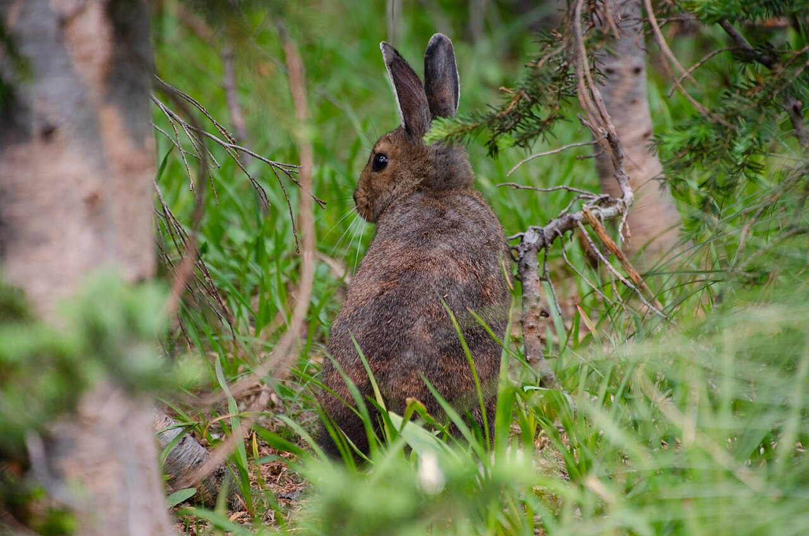

影响种群数量变化的因素
本期导读
非生物因素 · 生物因素 · 密度制约

视频原话 · 导读3 句
- 同学们好！这节课梳理人教版选择性必修二第一章第三节——影响种群数量变化的因素。8.6s
- 高考常考密度制约因素与非密度制约因素的区分，以及捕食者与被捕食者的数量变化曲线。8.7s
- 我们按六个考点梳理，每个考点都讲清楚怎么考、怎么做。5.5s
非生物因素01#
阳光
林下植物的种群密度，主要取决于林冠层的郁闭度（林下光照强度）
温度
寒冷季节到来，蚊类等昆虫一般会全部死亡
水
干旱使许多植物死亡率升高；但干旱是东亚飞蝗爆发的主要原因
考法
影响往往是综合性的：春夏种群迅速增长，除气温升高外，日照延长、降水增多也是重要原因
视频原话5 句
- 考点一，非生物因素。阳光、温度、水等都会影响种群数量。6.8s
- 阳光：森林中林下植物的种群密度，主要取决于林冠层的郁闭度，也就是林下的光照强度。8.8s
- 温度：蚊类等昆虫在寒冷季节到来时一般会全部死亡。5.7s
- 水：干旱缺水会使许多植物种群的死亡率升高；但对东亚飞蝗来说，气候干旱正是种群爆发式增长的主要原因。10.8s
- 考法：非生物因素的影响往往是综合性的。春夏时节种群迅速增长，除了气温升高，日照延长、降水增多也是重要原因。12.3s
生物因素02#
- 生物因素
- 种群内部
- 种内竞争密度越大越激烈
- 种群外部
- 捕食
- 种间竞争
- 寄生病原体、寄生虫
- 种群内部
种群密度越大，病原体的致病力和传播速度越大
易错
种内竞争是种群内部因素，不属于种间关系；捕食、竞争、寄生才是种间关系
视频原话5 句
- 考点二，生物因素。分为种群内部和种群外部两类。5.9s
- 种群内部：随着种群密度增大，种内竞争加剧，从而使种群的增长受到限制。7.6s
- 种群外部：其他生物通过捕食、种间竞争、寄生等关系影响种群数量。7.2s
- 比如，病原体和寄生虫的致病力和传播速度，会随着种群密度的增加而增加。7.6s
- 易错：种内竞争是种群内部的因素，不属于种间关系；捕食、竞争、寄生才是种间关系。9.1s
密度制约因素03#
密度制约因素
作用强度与种群密度相关
食物、天敌等生物因素
非密度制约因素
作用强度与种群密度无关
气温、干旱等气候因素；地震、火灾等自然灾害
例：一场寒潮，不论种群密度大小，冻死的比例差不多 → 非密度制约因素
解题方法
问一句：“种群越密，它的影响越大吗？”是 → 密度制约；不是 → 非密度制约
视频原话5 句
- 考点三，密度制约因素与非密度制约因素。4.7s
- 密度制约因素：对种群数量的作用强度与种群密度相关，一般是食物和天敌等生物因素。8.6s
- 非密度制约因素：作用强度与种群密度无关，比如气温、干旱等气候因素，以及地震、火灾等自然灾害。10.1s
- 比如一场寒潮，不论种群密度大小，冻死的比例都差不多，所以属于非密度制约因素。7.8s
- 解题方法：问自己“种群越密，它的影响是不是越大？”是，就是密度制约；不是，就是非密度制约。9.7s
捕食者与猎物曲线04#
解题方法
先增先减的是被捕食者；被捕食者数量一般多于捕食者；这种调节属于负反馈
视频原话5 句
- 考点四，捕食者与被捕食者的数量变化。经典例子是北美的猞猁和雪兔。7.6s
- 雪兔增多，猞猁因食物充足而增多；猞猁增多，雪兔被大量捕食而减少。7.7s
- 雪兔减少，猞猁因食物不足而减少；猞猁减少，雪兔又会增多，两者呈现周期性波动。8.9s
- 在曲线上，被捕食者先增加先减少，捕食者后增加后减少。6.2s
- 解题方法：先增先减的是被捕食者；一般来说，被捕食者的数量多于捕食者。这种调节属于负反馈。10.4s
保护濒危动物05#
调查
种群数量、年龄结构、性别比例
→
找原因
大熊猫：栖息地被破坏和碎片化；竹子开花枯死
→
定措施
建立自然保护区、建设生态廊道 → 提高K值
考法
措施要对准影响数量的关键因素；提高环境容纳量是保护濒危动物的根本措施
视频原话5 句
- 考点五，种群研究的应用之一：濒危动物的保护。4.9s
- 先调查种群的数量、年龄结构和性别比例，分析影响它们数量变化的因素。7.4s
- 例如大熊猫，主要威胁来自栖息地被破坏和碎片化，食物竹子开花枯死也会造成影响。8.4s
- 措施：建立自然保护区、建设生态廊道连通栖息地，从根本上提高环境容纳量。7.9s
- 考法：保护措施要对准影响种群数量的关键因素；提高K值是保护濒危动物的根本措施。8.9s
防治与渔业06#
有害生物防治
· 监测、预报，数量少时及早防治
· 引入天敌：生物防治
· 破坏生存条件，降低K值（兴修水利、改造蝗区）
渔业资源合理利用
· 控制捕捞强度
· 控制网眼大小，保护幼鱼
· 捕捞后种群数量保持在适当水平
考法
网眼过小 → 捕获大量幼鱼 → 年龄结构变为衰退型 → 数量下降；答题联系年龄结构和K值
视频原话5 句
- 考点六，有害生物的防治和渔业资源的合理利用。4.9s
- 防治有害生物，要监测和预报种群数量的变化，在数量较少时及早防治。7.4s
- 引入天敌进行生物防治，或破坏它们的生存条件、降低环境容纳量，比如防治东亚飞蝗时兴修水利、改造飞蝗滋生地。11.8s
- 渔业上，要控制捕捞强度和网眼大小，捕捞后让种群数量保持在适当水平，让鱼群持续高产。9.5s
- 考法：网眼过小会捕捞大量幼鱼，使年龄结构变为衰退型，种群数量下降。答题要联系年龄结构和K值。10.7s
易错速查✓
先自己判断，再点按钮查看对错与解析。
- 1林下植物的种群密度主要取决于光照说法正确。
- 2气温、干旱属于密度制约因素说法错误：属于非密度制约因素
- 3食物和天敌属于密度制约因素说法正确。
- 4猞猁和雪兔的曲线中，先增先减的是猞猁说法错误：先增先减的是被捕食者雪兔
- 5非生物因素的影响往往是综合性的说法正确。
- 6干旱年份东亚飞蝗种群数量往往下降说法错误：干旱年份飞蝗往往爆发
先增先减是猎物，气候灾害不制约！
视频原话 · 易错速查5 句
- 最后，用六道判断题检验一下。3.6s
- 判断一：林下植物的种群密度主要取决于光照？对。判断二：气温、干旱属于密度制约因素？错，属于非密度制约因素。13.1s
- 判断三：食物和天敌属于密度制约因素？对。判断四：先增先减的是猞猁？错，是被捕食者雪兔。11.4s
- 判断五：非生物因素的影响往往是综合性的？对。判断六：干旱年份东亚飞蝗数量往往下降？错，往往爆发。12.2s
- 六个考点串成一条线：先增先减是猎物，气候灾害不制约。我们下期再见！7.6s
图片来源
图片来源：Wikimedia Commons —— GlacierNPS《Summer snowshoe hare》Public domain
Photo: GlacierNPS, Public domain